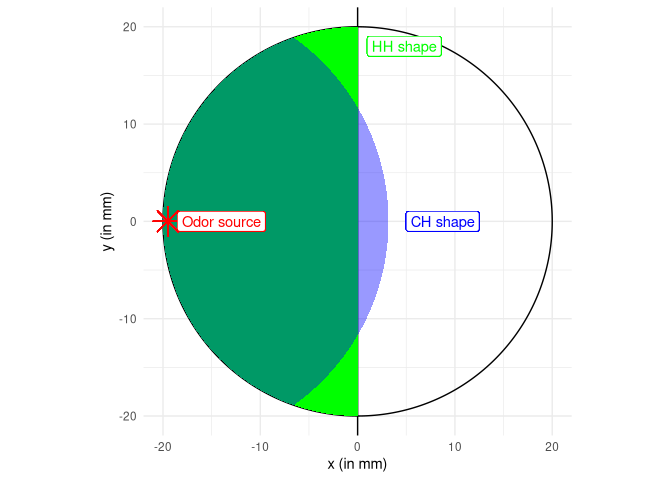

The goal of MiteMapTools is to …
https://github.com/LR69/MiteMap/tree/MiteMap.v6
Installation
You can install the development version of MiteMapTools from GitHub with:
# install.packages("pak")
pak::pak("adrientaudiere/MiteMapTools")
#> ! Using bundled GitHub PAT. Please add your own PAT using `gitcreds::gitcreds_set()`.
#>
#> → Will install 1 package.
#> → The package (0 B) is cached.
#> + MiteMapTool 0.0.0.9000 [bld][cmp] (GitHub: 9047a28)
#>
#> ℹ No downloads are needed, 1 pkg is cached
#> ✔ Installed MiteMapTool 0.0.0.9000 (github::adrientaudiere/MiteMapTools@9047a28) (19ms)
#> ✔ 1 pkg: added 1 [2.2s]Example
This is a basic example which shows you how to solve a common problem:
library(MiteMapTools)
#> Le chargement a nécessité le package : tidyverse
#> ── Attaching core tidyverse packages ──────────────────────── tidyverse 2.0.0 ──
#> ✔ dplyr 1.1.4 ✔ readr 2.1.5
#> ✔ forcats 1.0.0 ✔ stringr 1.5.1
#> ✔ ggplot2 3.5.1 ✔ tibble 3.2.1
#> ✔ lubridate 1.9.4 ✔ tidyr 1.3.1
#> ✔ purrr 1.0.4
#> ── Conflicts ────────────────────────────────────────── tidyverse_conflicts() ──
#> ✖ dplyr::filter() masks stats::filter()
#> ✖ dplyr::lag() masks stats::lag()
#> ℹ Use the conflicted package (<http://conflicted.r-lib.org/>) to force all conflicts to become errors
#> Le chargement a nécessité le package : readxl
## basic example codeA input folder for MiteMapTools consist of a - a metadata file (in xlsx or csv) with 8 columns: - Run number - File name (must be present in the list of zip files) - Date - Start time - Farm - MiteMap number - Bag - Modality
- a list of zip files with 4 files compressed inside
- A raw data file with 4 columns
- The time in second (position is recorded every 0.2s)
- The position in x (in mm)
- The position in y (in mm)
- Boolean variable indicating if the individual has remained immobile since the last record (1 if immobile)
- A png file figuring the position of the individual using an heatmap
- A processed data file called “formeD” (also called HH) compute the time spent in an area defined by the half side of the arena (see figure @ref(fig:cars-plot)).
- The date and hour of the experiment
- The name of the MiteMap run
- Total time spent in the half containing the odor source (second)
- Total time spent in the opposite half (second)
- Time spent immobile in the half containing the odor source (second)
- Time spent immobile in the opposite half (second)
- Total distance traveled in the half containing the odor source
- Total distance traveled in the opposite half (mm)
- A processed data file called “formeC” (also called CH) compute the time spent in an area defined by a circle center on the odor source (see figure @ref(fig:cars-plot)) encompassing half of the arena surface.
- The date and hour of the experiment
- The name of the MiteMap run
- Total time spent in the half containing the odor source (second)
- Total time spent in the opposite half (second)
- Time spent immobile in the half containing the odor source (second)
- Time spent immobile in the opposite half (second)
- Total distance traveled in the half containing the odor source
- Total distance traveled in the opposite half (mm)
- A raw data file with 4 columns
